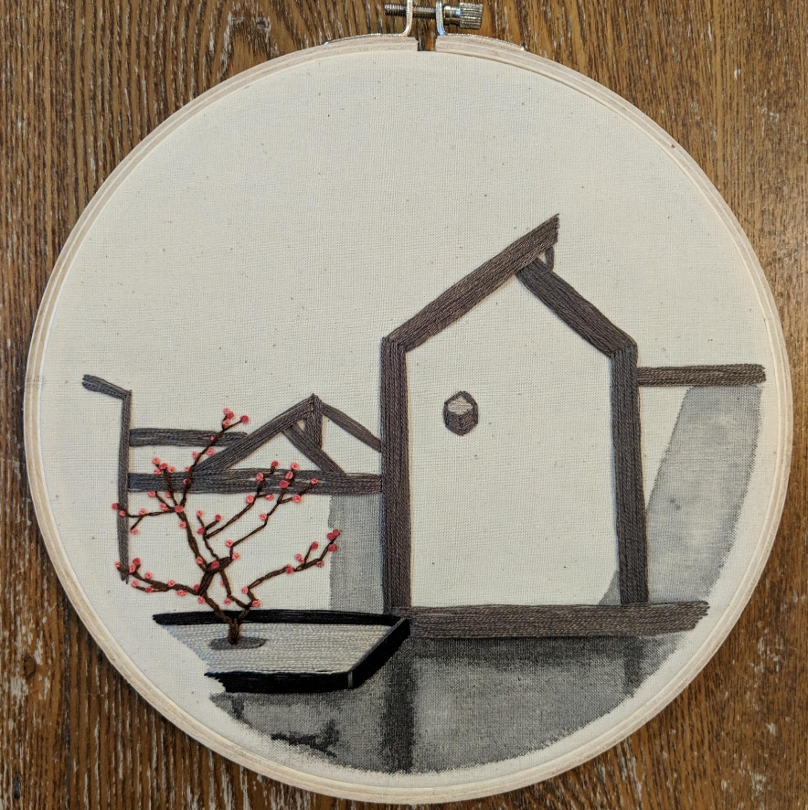
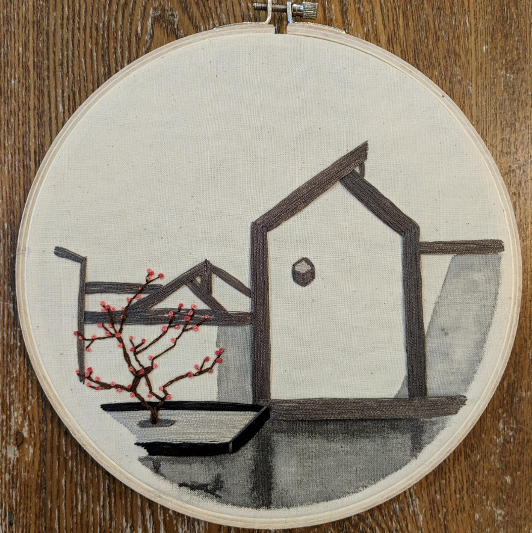

Personal Work
Project Details:
Drawings
 

Project Info
- Medium: Pencil, ink, mixed media
- Focus: Spatial studies and abstraction
- Format: Sketches, series, posters
Photography
Images from daily walks and travels—observations of urban life, ephemeral light, and textures that often inspire architectural thinking.


Project Info
- Subjects: Street, architecture, landscape
- Tools: DSLR and mobile
Jewelry


Project Info
- Materials: Metal, stone